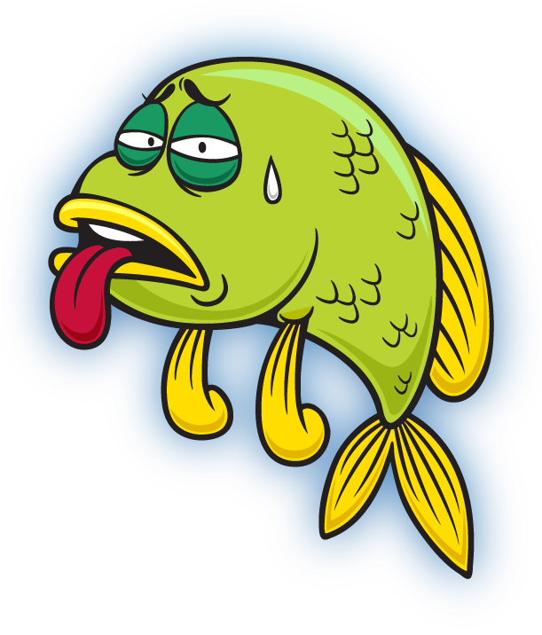
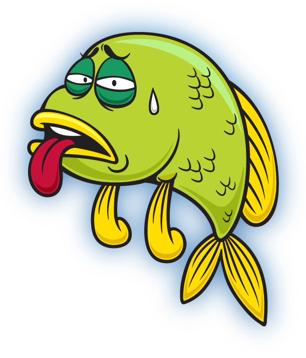
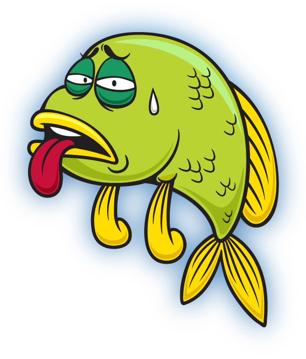
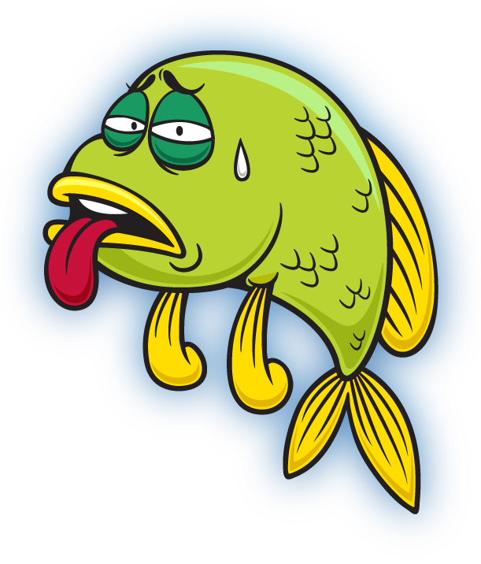

And clean water is
important for
humans too!
Answer the question by
popping the correct bubbles.
In this game remove everything
that doesn't belong in the water.
Take this offline.
Never throw the trash in the water.
You ran out of time!

Let me say thank you
for cleaning up
with a new